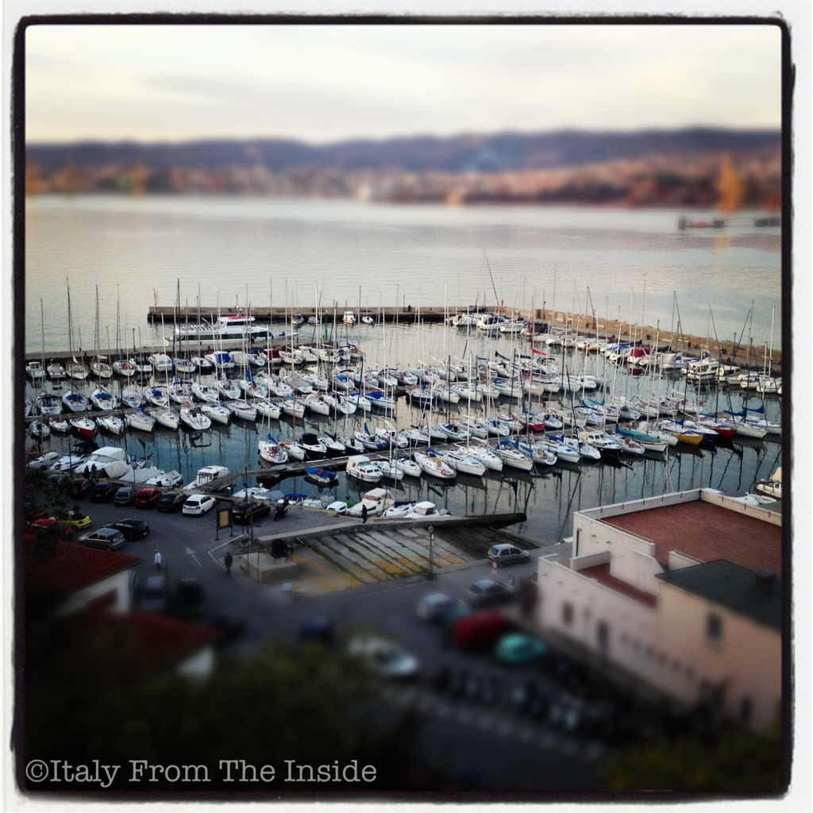

If there's one thing I miss from Italy that's the sea. Yes, we are surrounded by water in Seattle (and I mean water coming from every direction, mainly vertically...), but it is not the same. The scent of the sea, its warmth and color are not the same. The taste of the fish is not the same either. I miss my calamari...